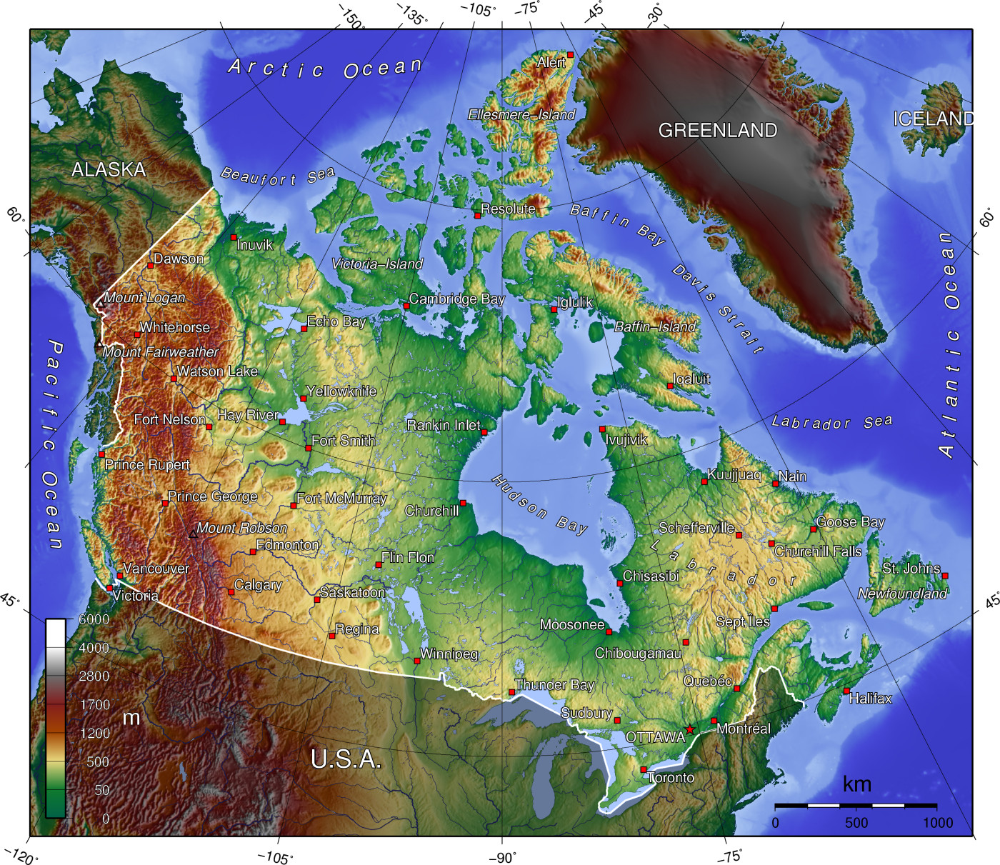

C anada is a country in North America. Its ten provinces and three territories extend from the Atlantic to the Pacific and northward into the Arctic Ocean, covering 9.98 million square kilometres (3.85 million square miles), making it the world's second-largest country by total area. Its southern and western border with the United States, stretching 8,891 kilometres (5,525 mi), is the world's longest bi-national land border. Canada's capital is Ottawa, and its three largest metropolitan areas are Toronto, Montreal, and Vancouver. Indigenous peoples have continuously inhabited what is now Canada for thousands of years. Beginning in the 16th century, British and French expeditions explored and later settled along the Atlantic coast. As a consequence of various armed conflicts, France ceded nearly all of its colonies in North America in 1763. In 1867, with the union of three British North American colonies through Confederation, Canada was formed as a federal dominion of four provinces. This began an accretion of provinces and territories and a process of increasing autonomy from the United Kingdom. This widening autonomy was highlighted by the Statute of Westminster 1931 and culminated in the Canada Act 1982, which severed the vestiges of legal dependence on the Parliament of the United Kingdom.
 By total area (including its waters), Canada is the second-largest country in the world, after Russia. By land area alone, however, Canada ranks fourth, due to having the world's largest proportion of fresh water lakes. Stretching from the Atlantic Ocean in the east, along the Arctic Ocean to the north, and to the Pacific Ocean in the west, the country encompasses 9,984,670 km2 (3,855,100 sq mi) of territory. Canada also has vast maritime terrain, with the world's longest coastline of 243,042 kilometres (151,019 mi). 128 129 In addition to sharing the world's largest land border with the United States—spanning 8,891 km (5,525 mi)—Canada shares a maritime boundary with Greenland to the northeast and with the France's overseas collectivity of Saint Pierre and Miquelon to the southeast. 130 Canada is also home to the world's northernmost settlement, Canadian Forces Station Alert, on the northern tip of Ellesmere Island—latitude 82.5°N—which lies 817 kilometres (508 mi) from the North Pole.
According to the 2016 Canadian Census, the country's largest self-reported ethnic origin is Canadian (accounting for 32 percent of the population),[b] followed by English (18.3 percent), Scottish (13.9 percent), French (13.6 percent), Irish (13.4 percent), German (9.6 percent), Chinese (5.1 percent), Italian (4.6 percent), First Nations (4.4 percent), Indian (4.0 percent), and Ukrainian (3.9 percent).There are 600 recognized First Nations governments or bands, encompassing a total of 1,525,565 people. The Indigenous population in Canada is growing at almost twice the national rate, and four percent of Canada's population claimed an Indigenous identity in 2006. Another 22.3 percent of the population belonged to a non-Indigenous visible minority.[358] In 2016, the largest visible minority groups were South Asian (5.6 percent), Chinese (5.1 percent) and Black (3.5 percent).Between 2011 and 2016, the visible minority population rose by 18.4 percent.[358] In 1961, less than two percent of Canada's population (about 300,000 people) were members of visible minority groups. Indigenous peoples are not considered a visible minority in Statistics Canada calculations.